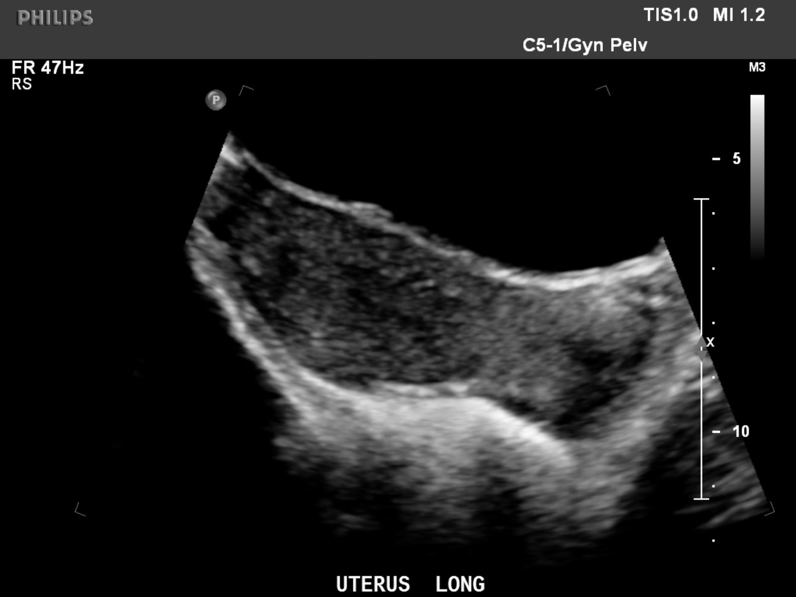

Normal uterus (transabdominal US)الرحم الطبيعي بالسونار🟢 Normal · الصورة الطبيعية

الحالة: مقطع طولي طبيعي للرحم عبر البطن.
النمط: Greyscale (B-mode) — السائل (البول، الصفراء، الدم) أسود عديم الصدى (anechoic)، والحصى والعظم والدهون بيضاء لامعة (echogenic).
ما يُرى فيها: الرحم عضو كمثري الشكل، عضلته (myometrium) متجانسة متوسطة الصدى، وبطانته (endometrium) خط في الوسط تتغير سماكته مع الدورة الشهرية.
الوضعية: Longitudinal, transabdominal (UTERUS LONG)